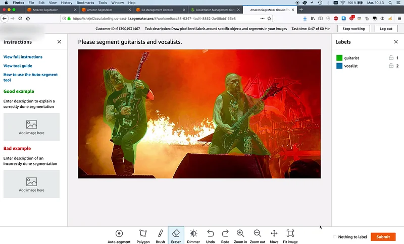

Annotating Image Datasets with Amazon SageMaker Ground Truth

Launched at AWS re:Invent 2018, Amazon SageMaker Ground Truth helps you build highly accurate training datasets for machine learning quickly. It provides built-in workflows for text and image datasets, and you can also define custom workflows.
Amazon SageMaker Ground Truth - Build Highly Accurate Datasets and Reduce Labeling Costs by up to…
In 1959, Arthur Samuel defined machine learning as a "field of study that gives computers the ability to learn without…aws.amazon.com
In 1959, Arthur Samuel defined machine learning as a "field of study that gives computers the ability to learn without…aws.amazon.com
We just announced a cool new tool for automatic segmentation. I took this opportunity to record a 4-part end to end demo showing how to annotate images.
Happy to answer questions here or on Twitter.